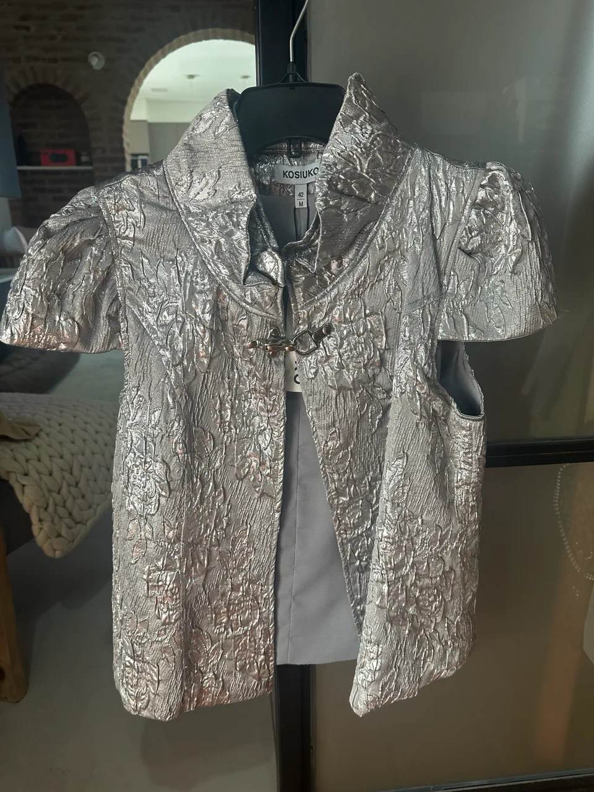

MODERNIDAD - ESTILO - VANGUARDIA
Aprende más sobre la marca y su origen

Pantalones con botamangas oxford gigantescas y lavados súper matizados.

Una de las colecciones más estéticas y recordadas a nivel gráfico.

Abrigos de jean rígido intervenidos con procesos de engomado tornasolado.
Remeras de algodón con calces al cuerpo y diseños de inspiración gótica o rockera.
www.kosiuko.com
@kosiuko.ok
info@kosiuko.com
Francesca Barbieri